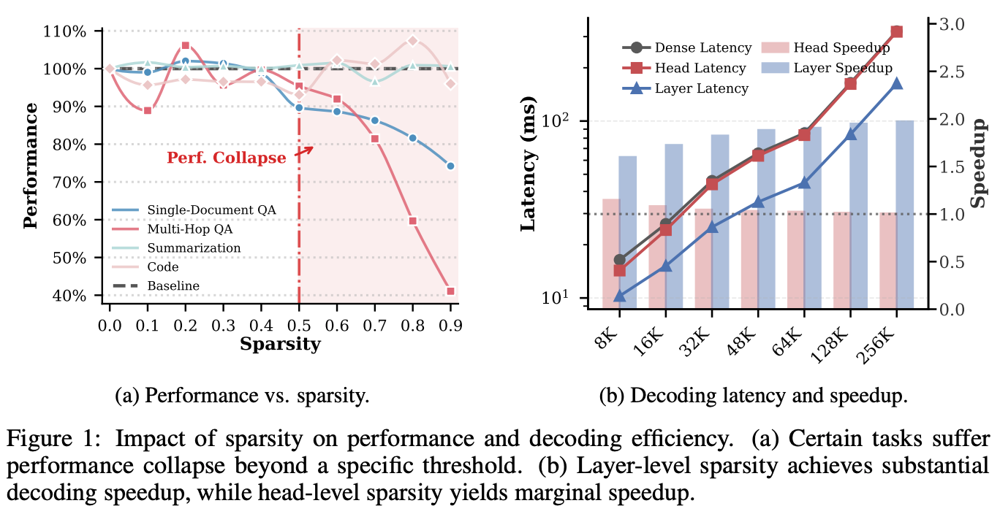
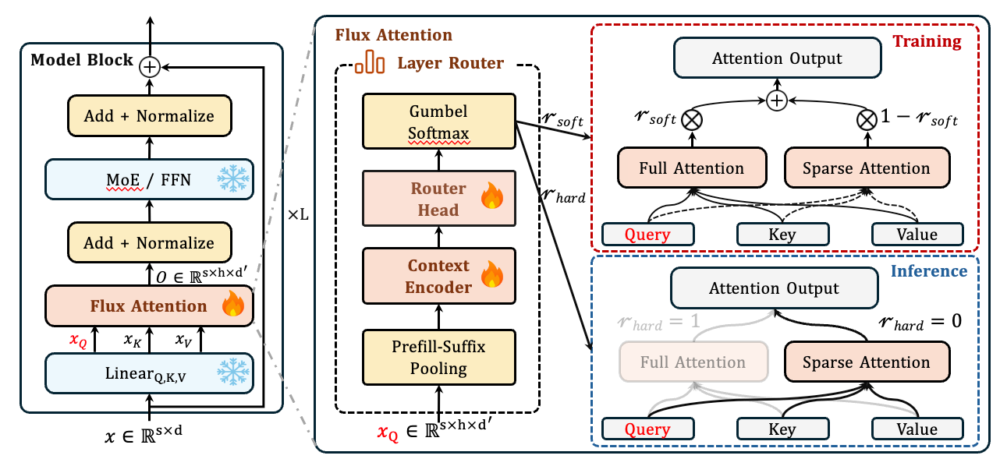
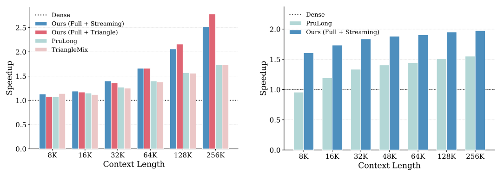
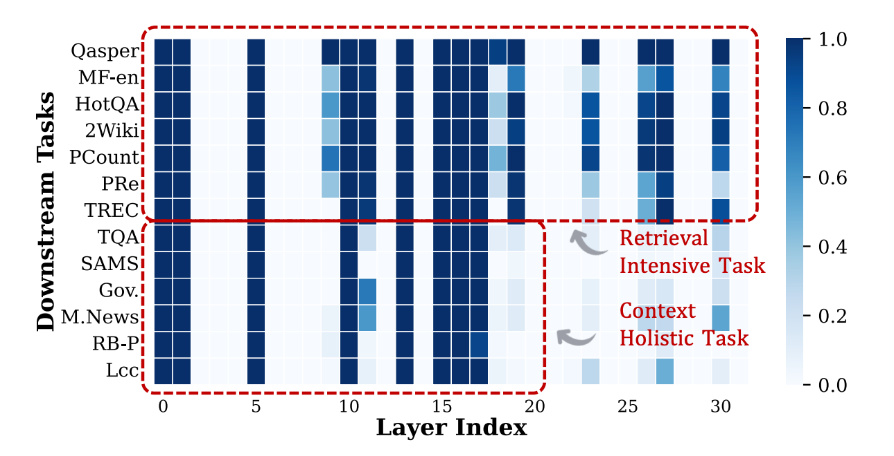
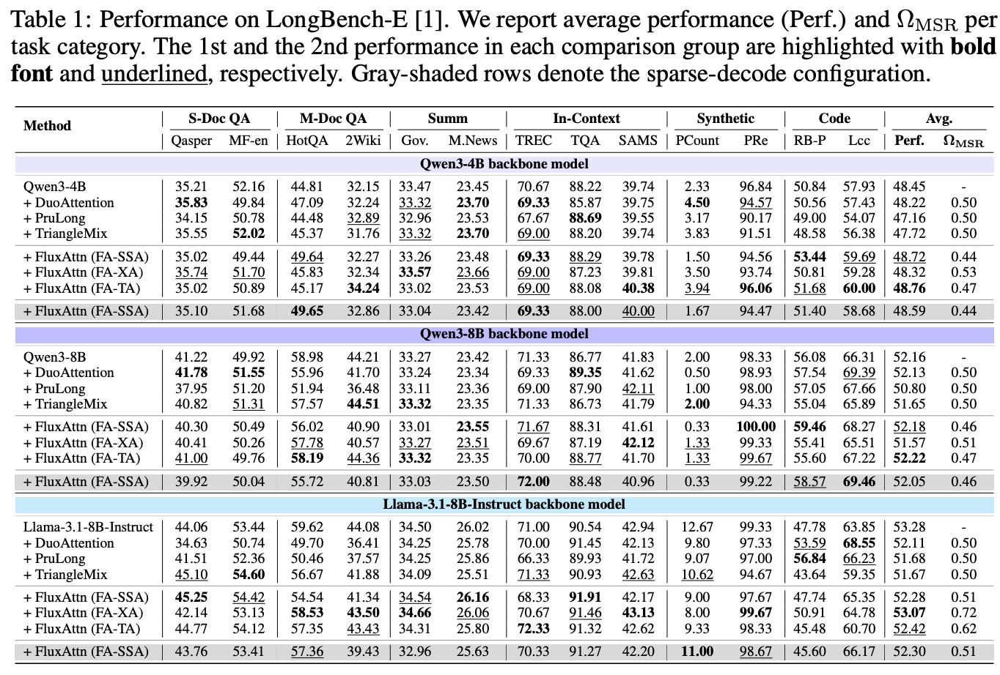
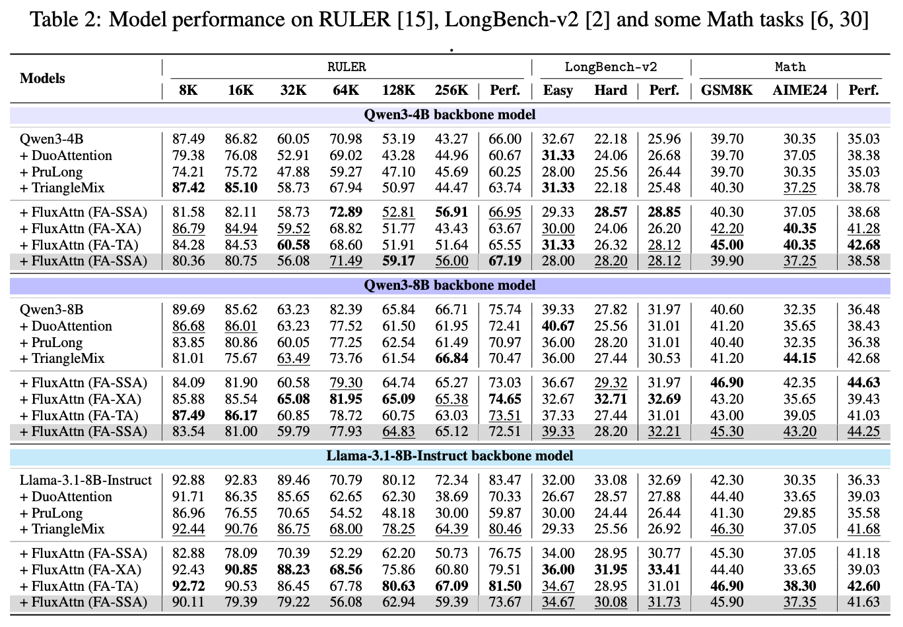

Prefill Speedup
FluxAttention reports up to 2.8× speed improvement in the prefill stage through layer-wise routing between Full Attention and Sparse Attention.
Decode Speedup
FluxAttention achieves up to 2.0× speed improvement in the decode stage while preserving high-fidelity retrieval.
Efficient Training
The framework is parameter-efficient and requires only 12 hours of training on 8×A800 GPUs.
Abstract
The quadratic computational complexity of standard attention mechanisms presents a severe scalability bottleneck for LLMs in long-context scenarios. While hybrid attention mechanisms combining Full Attention (FA) and Sparse Attention (SA) offer a potential solution, existing methods typically rely on static allocation ratios that fail to accommodate the variable retrieval demands of different tasks.
Furthermore, head-level dynamic sparsity often introduces severe computational load imbalance and synchronization long-tails, which hinder hardware acceleration during autoregressive decoding. To bridge this gap, we introduce Flux Attention, a context-aware framework that dynamically optimizes attention computation at the layer level.
By integrating a lightweight Layer Router into frozen pretrained LLMs, the proposed method adaptively routes each layer to FA or SA based on the input context. This layer-wise routing preserves high-fidelity information retrieval while ensuring contiguous memory access, translating theoretical computational reductions into practical wall-clock speedups. As a parameter-efficient approach, our framework requires only 12 hours of training on 8×A800 GPUs. Extensive experiments across multiple long-context and mathematical reasoning benchmarks demonstrate that Flux Attention achieves a superior trade-off between performance and inference speed compared with baseline models, with speed improvements of up to 2.8× and 2.0× in the prefill and decode stages.
Key Insight
Why Static or Head-Level Sparsity Is Not Enough
Task demands vary: retrieval-intensive prompts need denser token interaction, while context-holistic ones tolerate far more sparsity. A single fixed ratio therefore cannot serve both.

Static Ratios Are Brittle
Retrieval-intensive tasks need denser token interaction, while context-holistic tasks can tolerate higher sparsity. One ratio for every input cannot satisfy both.
Layer-Level Routing Helps
The router predicts the attention mode per layer from context, enabling dynamic computation allocation without per-head fragmentation.
Hardware Efficiency Matters
Uniform layer-level workloads reduce synchronization stalls and better translate theoretical FLOP savings into wall-clock decode gains.
Method
FluxAttention: Layer Router for Hybrid Attention
FluxAttention integrates a lightweight Layer Router into frozen pretrained LLMs and learns soft routing with Gumbel-Softmax during training, then discretizes to hard routing at inference.

Layer Router
Routes each layer to Full Attention or Sparse Attention according to the current context and retrieval demand.
Soft-to-Hard Routing
Uses differentiable Gumbel-Softmax in training and deterministic hard routing in inference for practical deployment.
Parameter Efficiency
The router can be trained efficiently on frozen pretrained LLMs, requiring only 12 hours on 8×A800 GPUs.
Results
Better Speed-Performance Trade-Offs Across Benchmarks

Dynamic Task Adaptation
The router adjusts layer sparsity by context, improving robustness across retrieval-intensive and context-holistic tasks.
Real Decode Gains
Layer-level routing avoids the head-level synchronization long tail and delivers stronger decode acceleration in practice.
Fast Adaptation Cost
Parameter-efficient tuning converges in about 12 hours on 8×A800 GPUs with frozen backbone weights.


Scroll horizontally to see the full table
Experimental Validation
Context-Aware Routing Improves Long-Context Inference
FluxAttention is evaluated on multiple long-context and mathematical reasoning benchmarks, where it delivers better speed-performance trade-offs than baseline models.

Scroll horizontally to see the full table
BibTeX
@article{qiu2026flux,
title={Flux Attention: Context-Aware Hybrid Attention for Efficient LLMs Inference},
author={Qiu, Quantong and Hong, Zhiyi and Yang, Yi and Wang, Haitian and Liu, Kebin and Dang, Qingqing and Li, Juntao and Zhang, Min},
journal={arXiv preprint arXiv:2604.07394},
year={2026}
}